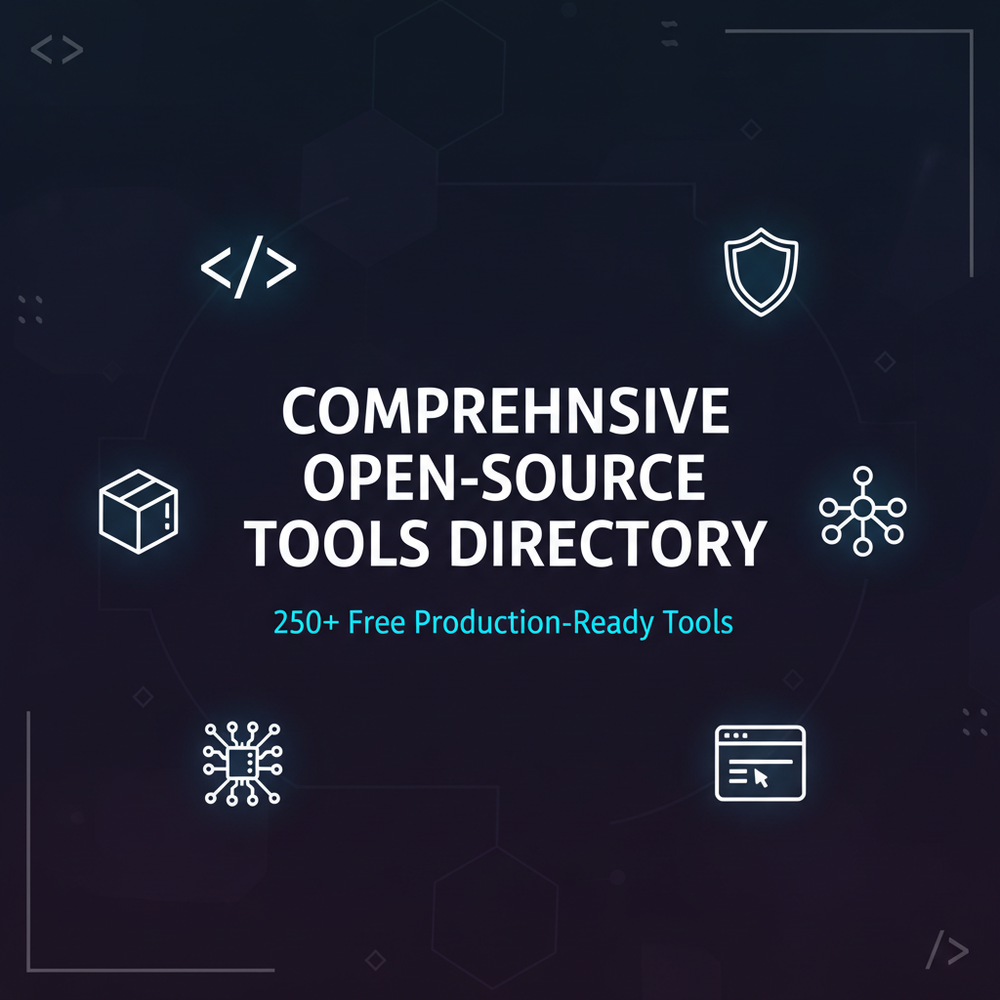
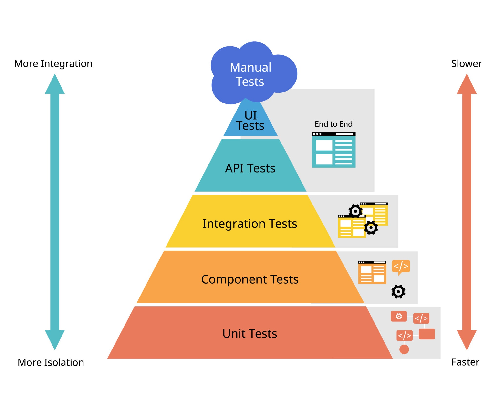

Comprehensive Open-Source Tools Directory
Welcome to the Comprehensive Open-Source Tools Directory – the ultimate resource for developers, security professionals, system administrators, and technology enthusiasts seeking production-grade, free, and open-source software solutions. This meticulously curated directory features 200+ verified open-source tools across 8 major categories, providing you with everything needed to build, secure, and maintain modern applications without licensing costs or vendor lock-in.

What You'll Find in This Directory
The below extensive guide covers the complete spectrum of open-source software, including:
🚀 Programming & Development Tools
Discover powerful code editors (VS Code, Neovim, Helix), compilers (GCC, Clang, Rust), programming language runtimes (Python, Node.js, Java), debugging tools (GDB, pytest, Jest), and CLI utilities (fzf, ripgrep, bat) that enhance developer productivity.
🌐 Web Development Frameworks
Explore frontend frameworks (React, Vue.js, Svelte, Angular), backend frameworks (Express.js, FastAPI, Django, Spring Boot), static site generators (Hugo, Jekyll, Astro), and modern bundlers (Vite, Webpack, esbuild) for building responsive web applications.s
🔐 Cybersecurity & Ethical Hacking
Access professional-grade security tools including penetration testing frameworks (Metasploit, Burp Suite, OWASP ZAP), vulnerability scanners (OpenVAS, Nikto, Nuclei), password auditing tools (John the Ripper, Hashcat, Hydra), web security testing platforms, and OSINT intelligence gathering tools.
🌍 Networking & System Administration
Master network diagnostics with scanning tools (Nmap, Wireshark, Masscan), remote access solutions (RustDesk, Apache Guacamole, TigerVNC), infrastructure monitoring platforms (Prometheus, Grafana, Zabbix), and secure file transfer systems (Syncthing, Nextcloud, Croc).
⚡ Hardware & Embedded Systems
Get started with microcontroller development using Arduino IDE, PlatformIO, and STM32CubeIDE, plus PCB design software (KiCad, Fritzing) and circuit simulation tools (ngspice, gEDA).
📝 Productivity & Knowledge Management
Organize your digital life with password managers (Bitwarden, KeePassXC), backup solutions (Duplicati, Restic, Borg), and note-taking applications (Logseq, Obsidian, Joplin) that prioritize security and privacy.
🏗️ Infrastructure & DevOps
Streamline your deployment pipeline with CI/CD platforms (GitHub Actions, GitLab CI, Jenkins), container orchestration (Docker, Kubernetes, Podman), and infrastructure-as-code tools that enable scalable cloud-native applications.
🎬 Media & Content Creation
Create professional-quality content using video processing tools (FFmpeg, OBS Studio, Shotcut) and audio editing software (Audacity) with full codec support and GPU acceleration.
Table of Contents
Category 0 - Introduction
Category 1 - Programming & Development
Category 2 - Web Development & Frameworks
Category 3 - Networking & System Tools
Category 4 - Cybersecurity & Ethical Hacking
Category 5 - Hardware & Embedded Systems
Category 6 - Productivity & Knowledge Managements
Category 7 - Infrastructure & DevOps
Category 8 - Media & Content Creation
Category 9 - Conclusion
Introduction
This tools directory is a central hub for free, open‑source software used by professional developers, system administrators, security engineers, and DevOps teams. It organizes 250+ actively maintained projects into clear categories like programming, web development, ethical hacking, networking, infrastructure, productivity, and media so you can quickly find the right tool for any workflow. Each entry includes a concise description, maturity rating, and direct GitHub link to help you evaluate, adopt, and integrate the best open‑source alternatives into your stack..
Purpose & Overview
Why This Directory?
This comprehensive directory serves as a production-ready resource for:
- Developers seeking the best open-source alternatives to commercial software.
- System Administrators managing infrastructure without vendor lock-in.
- Security Professionals conducting ethical hacking & penetration testing.
- Hobbyists & Enthusiasts learning software development and system administration.
- Organizations reducing costs while maintaining professional-grade tools.
Key Features
- 100% Open Source: Every tool has publicly available source code.
- Actively Maintained: Regular updates and community support.
- Production-Ready: Used by professionals in real-world environments.
- Cross-Platform: Most tools work on Windows, macOS, and Linux.
- Zero Cost: No licensing fees, fully free to use and modify
1. PROGRAMMING & SOFTWARE DEVELOPMENT
Category Overview
This section covers the foundational tools for software development: text editors, compilers, interpreters, debugging utilities, and command-line tools that every developer needs. These tools range from beginner-friendly editors to professional-grade IDEs and performance optimization utilities. Whether you're writing Python scripts, building C/C++ applications, or debugging complex systems, this category contains the essential infrastructure for any development workflow.
Why It Matters
- Development Speed: Modern editors with syntax highlighting, autocomplete, and extensions dramatically reduce coding time.
- Code Quality: Integrated testing frameworks and debuggers catch errors before production.
- Cross-Platform: Most tools run on Windows, macOS, and Linux without modification.
- Community: Active open-source communities provide plugins, themes, and extensions.
Code Editors & IDEs
Category Purpose
Code editors range from lightweight, minimalist text editors to full-featured Integrated Development Environments (IDEs). The choice depends on your workflow:
- Lightweight Editors (VS Code, Neovim): Fast startup, quick edits, minimal overhead.
- Full IDEs (Eclipse, NetBeans): Complete project management, advanced debugging, built-in tools.
| Tool | Description | Use Case | GitHub Link |
|---|---|---|---|
| VS Code (Code - OSS) | Lightweight, highly customizable editor with 50K+ extensions; core version without telemetry | Web dev, Python, general coding | Link |
| VSCodium | Microsoft VS Code with all telemetry/tracking removed; identical feature set, privacy-focused | Privacy-conscious developers | Link |
| Neovim | Modern fork of Vim with Lua scripting, LSP support, async plugins; extremely fast terminal editor | Linux/terminal developers, power users | Link |
| GNU Emacs | Highly extensible Lisp-based editor with steep learning curve; legendary for power users | Systems programming, Lisp developers | Link |
| Zed (Open Source) | High-performance multiplayer code editor written in Rust; collaborative editing, AI assistance | Teams, real-time collaboration | Link |
| Lapce | Fast, modern editor in Rust with modal editing and built-in LSP; minimal resource usage | Performance-critical workflows | Link |
| Helix | Post-modern text editor (Rust-based) with intuitive keybindings, multi-selection, LSP | Modal editing without Vim learning curve | Link |
| Eclipse IDE | Mature, plugin-heavy IDE with workspace management; primarily Java but supports multiple languages | Enterprise Java development | Link |
| Apache NetBeans | Full-featured IDE with visual design tools, database integration, excellent refactoring | Java, PHP, JavaScript, HTML5 | Link |
| Micro | Simple, intuitive terminal text editor; great for beginners, easy keybindings | Quick edits, terminal-based work | Link |
Selection Guidance:
- Beginners: Start with VS Code (largest ecosystem) or Micro (simplest).
- Performance Focus: Lapce, Helix, or Neovim
- Terminal Power Users: Choose Neovim, Helix, or Emacs.
- Teams: Zed offers collaborative features.
- Legacy Systems: Eclipse IDE or Emacs for stability.
Legacy Systems:
Category Purpose
These are the runtime environments and compilation tools that turn source code into executable programs. Different languages require different tools; this section covers the most important open-source runtimes.
Key Concept: A compiler/interpreter is to code what a translator is to languages—it converts human-readable instructions into machine-executable instructions.
| Tool | Description | Language | Performance | Use Case | GitHub Link |
|---|---|---|---|---|---|
| GCC (GNU Compiler Collection) | Industry-standard C/C++/Fortran compiler; available on virtually every Linux system; battle-tested | C, C++, Fortran, Go | Excellent | Systems programming, production C++ | Link |
| Clang/LLVM | Modern C/C++ compiler with better error messages and faster compilation; basis for many tools | C, C++, Objective-C | Excellent | Modern C++, Apple development | Link |
| OpenJDK | Official Java platform implementation; foundation for 10+ billion Java devices | Java | Good | Enterprise Java applications | Link |
| CPython | Official Python interpreter; most widely used, great ecosystem | Python | Good | Data science, web, scripting | Link |
| Node.js | JavaScript runtime built on V8 engine; enables JavaScript outside browsers | JavaScript | Excellent | Web backends, CLI tools, real-time apps | Link |
| Rust | Systems language with memory safety guarantees; prevents entire classes of bugs | Rust | Excellent | Systems programming, embedded, high-performance | Link |
| Go | Simple, efficient language with built-in concurrency; compiled to static binaries | Go | Excellent | Microservices, DevOps tools, networking | Link |
| .NET (dotnet/runtime) | Cross-platform runtime for C#/F#; Microsoft's modern development platform | C#, F#, VB.NET | Excellent | Enterprise .NET, cloud applications | Link |
| Ruby | Dynamic, object-oriented language; famous for Rails web framework | Ruby | Good | Web applications, scripting | Link |
| PHP | Server-side web scripting language; powers 75%+ of web servers | PHP | Good | Web servers, WordPress plugins | Link |
Technical Considerations:
- C/C++: GCC for maximum compatibility, Clang for faster iteration.
- Python: CPython is the reference implementation.
- JavaScript/Node.js: Dominates backend scripting and CLI tools.
- Rust: Best choice for performance-critical systems code.
- Go: Optimal for microservices and cloud-native applications.
Debugging & Testing Tools
Category Purpose
No code is perfect. Debugging tools help identify problems, while testing frameworks ensure reliability. These tools are essential for professional development.
Testing Pyramid: Unit tests (fast, many) ⟶ Integration tests (slower, fewer) ⟶ End-to-end tests (slowest, critical paths).

| Tool | Description | Language | Key Feature | GitHub Link |
|---|---|---|---|---|
| GDB | GNU Debugger; allows stepping through code, inspecting variables, setting breakpoints | C/C++ | Breakpoints, watchpoints, stack inspection | Link |
| LLDB | LLVM debugger; superior to GDB for C++/Swift development | C/C++/Swift | Similar to GDB, better LLVM integration | Link |
| pytest | Feature-rich Python testing framework; simple syntax, powerful fixtures | Python | Fixtures, parametrization, plugin ecosystem | Link |
| unittest | Python's built-in testing framework; part of standard library | Python | Built-in, no dependencies | Link |
| Jest | JavaScript testing framework; snapshot testing, built-in coverage | JavaScript/TypeScript | Snapshot testing, code coverage, mocking | Link |
| Valgrind | Memory debugging and profiling; detects memory leaks and corruption | C/C++ | Memory leaks, heap analysis, call graphs | Link |
| rr (record and replay) | Time-travel debugger for Linux; replay and debug execution deterministically | C/C++ | Record execution, replay for deterministic debugging | Link |
| Catch2 | Header-only C++ unit testing framework; easy integration, expressive assertions | C++ | Header-only, highly customizable assertions | Link |
| Mock.js | Mocking and data generation library for JavaScript testing | JavaScript | Test runner, flexible reporter system | Link |
Best Practices:
- Memory Debugging: Valgrind for C/C++, pytest for Python.
- Frontend Testing: Jest with React/Vue for comprehensive coverage.
- Debugging Complex Issues: rr for deterministic replay (Linux).
CLI Utilities & Automation
Category Purpose
Modern command-line tools that replace Unix utilities with faster, more intuitive alternatives. These tools improve terminal productivity dramatically.
Philosophy: Unix tools do one thing well and compose together via pipes. These tools maintain that philosophy while adding modern features.
| Tool | Description | Purpose | Improvement Over Original | GitHub Link |
|---|---|---|---|---|
| fzf | Fuzzy finder for any text list; integrates with bash history, file searching, git | Interactive selection from any list | 100x faster than manual searching | Link |
| ripgrep (rg) | Ultra-fast text search across files; 10-100x faster than grep | Searching code, logs, text | 10-100x faster than grep | Link |
| fd | Fast alternative to find command; simpler syntax, respects .gitignore | Finding files by name | Simpler syntax, 5x faster | Link |
| bat | cat with syntax highlighting and git integration; beautiful code display | Viewing code, logs, text files | Colored output, git integration | Link |
| eza (exa fork) | Modern ls replacement with colors, tree view, git awareness | File listing | Colored output, git status, tree view | Link |
| tldr | Simplified man pages with practical examples; way better than man pages | Quick command reference | Practical examples vs theory | Link |
| zoxide | Smarter cd command; learns your directory patterns | Quick navigation to frequently-used directories | Auto-suggestion based on frequency | Link |
| delta | Syntax-highlighted diff viewer with side-by-side view | Reviewing code changes | Color and side-by-side diffs | Link |
| btop | Interactive process/resource monitor; beautiful, informative display | System monitoring | Modern UI, GPU monitoring | Link |
| starship | Fast, minimal shell prompt; shows git status, language versions, exit codes | Terminal customization | Modular, language detection | Link |
Workflow Optimization:
- Search: fzf for interactive selection, ripgrep for code searching.
- Navigation: zoxide to jump to frequent directories without typing full path.
- Development: delta for code diffs, bat for syntax highlighting during terminal work.
2. WEB DEVELOPMENT & FRAMEWORKS
Category Overview
Web development has evolved into a sophisticated ecosystem with tools for every layer: frontend frameworks for UI, backend frameworks for servers, static site generators for content, and bundlers for optimization. This category covers the essential tools for building modern websites and web applications.
Technology Stack
- Frontend: UI rendering in browsers (HTML/CSS/JavaScript).
- Backend: Server-side logic and database interaction.
- DevOps; Deployment, scaling, monitoring.
Frontend Frameworks & UI Libraries
Category Purpose
These tools build the interactive user interfaces that users see and interact with. Each has different philosophies:
- Component-Based: React, Vue, Svelte (reusable UI pieces).
- Progressive: Vue, Alpine.js (add interactivity incrementally).
- Compiler-Based: Svelte (optimized at build time).
- Web Components: Lit (standard web platform APIs).
| Tool | Description | Complexity | Use Case | GitHub Link |
|---|---|---|---|---|
| React | Component-based UI library by Meta; largest ecosystem, 100K+ packages | Medium | Large applications, job market | Link |
| Vue.js | Progressive framework; gentle learning curve, excellent documentation | Easy-Medium | Small-medium apps, fast prototyping | Link |
| Svelte | Compiler-based framework; smallest runtime, least boilerplate | Easy-Medium | Performance-critical apps | Link |
| Angular | Full-featured framework by Google; opinionated, steep learning curve | Hard | Enterprise applications | Link |
| Lit | Lightweight web components library; modern, standards-based | Easy | Simple interactive components | Link |
| Preact | Fast React alternative; 3KB, drop-in replacement | Medium | Memory-constrained devices | Link |
| Alpine.js | Minimal JavaScript framework; enhances HTML with interactivity | Easy | Adding interactivity to HTML | Link |
| htmx | High-power HTML attribute language; AJAX/WebSockets in HTML | Easy | Server-side templating + interactivity | Link |
| Tailwind CSS | Utility-first CSS framework; low-level, highly customizable | Medium | Any project needing styling | Link |
| Bootstrap | CSS framework with pre-built components | Easy | Rapid prototyping, consistent design | Link |
Selection Guide:
- Beginners: Vue.js or Alpine.js for gentler learning curve.
- Enterprise: Angular for large teams with strict standards.
- Performance: Svelte or Preact for mobile/low-bandwidth.
- Modern Projects: React for job market value and ecosystem.
Backend Frameworks & APIs
Category Purpose
Backend frameworks handle server-side logic: receiving requests, processing data, interacting with databases, and sending responses. Different languages have different philosophies.
API Pattern: REST (HTTP methods) vs GraphQL (single endpoint with flexible queries) vs RPC (function calls).
| Tool | Description | Language | Speed | Scalability | Use Case | GitHub Link |
|---|---|---|---|---|---|---|
| Express.js | Minimal Node.js framework; lightweight, huge ecosystem | JavaScript | Good | Medium | Startups, REST APIs | Link |
| Fastify | Fast Node.js framework; better performance than Express | JavaScript | Excellent | Good | Performance-critical APIs | Link |
| NestJS | Enterprise-grade TypeScript framework; opinionated, structured | TypeScript | Good | Good | Large applications | Link |
| FastAPI | Modern Python API framework with async/await, type hints | Python | Excellent | Good | Data science, MVPs | Link |
| Django | Full-stack Python framework with ORM, admin, auth built-in | Python | Good | Excellent | Full web applications | Link |
| Flask | Lightweight Python micro-framework; minimal dependencies | Python | Good | Medium | Small-medium projects | Link |
| Spring Boot | Enterprise Java framework; production-grade, mature ecosystem | Java | Excellent | Excellent | Large enterprises | Link |
| Laravel | Elegant PHP framework; beautiful syntax, rapid development | PHP | Good | Good | Web applications | Link |
| Gin | Lightweight Go web framework; minimal boilerplate | Go | Excellent | Excellent | Microservices, APIs | Link |
| Axum | Ergonomic Rust web framework; type-safe, high performance | Rust | Excellent | Excellent | Systems with strict requirements | Link |
Technology Stack Recommendations:
- Rapid Prototyping: Express.js + MongoDB or Flask + SQLite
- Enterprise Applications: Spring Boot or Django
- High-Performance APIs: Fastify, Gin, or Axum
- Full-Stack Applications: Django or Laravel
Static Site Generators
Category Purpose
Convert source files (Markdown, templates) into static HTML/CSS/JS. Benefits:
- Speed: Serve pre-generated HTML (no server-side rendering).
- Security: No server-side code execution.
- Scalability: CDN-friendly, fast deployment.
- Use Cases: Blogs, documentation, portfolios, corporate sites.
| Tool | Description | Language | Input Format | Use Case | GitHub Link |
|---|---|---|---|---|---|
| Hugo | Blazingly fast static site generator; 1000+ pages in seconds | Go | Markdown, TOML | Large sites, blogs | Link |
| Jekyll | Blog-aware generator; GitHub Pages integration | Ruby | Markdown, Liquid | Blogs, GitHub Pages | Link |
| Astro | Modern site builder with partial hydration ("islands") | JavaScript | Markdown, JSX | Fast multi-page sites | Link |
| Eleventy (11ty) | Simpler alternative to Hugo; flexible, data-driven | JavaScript | Markdown, multiple | Simple-medium sites | Link |
| Hexo | Fast blog framework with theme ecosystem | JavaScript | Markdown | Blogs, projects | Link |
| Next.js | React framework with SSR/SSG; hybrid static+dynamic | JavaScript | JSX, Markdown | Full-featured sites with React | Link |
| Docusaurus | Documentation generator built on React | JavaScript | Markdown | Technical documentation | Link |
| MkDocs | Markdown-to-documentation converter; simple, effective | Python | Markdown, YAML | Quick documentation | Link |
| Zola | Fast static site generator written in Rust | Rust | Markdown, TOML | Performance-focused blogs | Link |
| Pelican | Static site generator for content-focused sites | Python | Markdown, RST | Flexible blogging | Link |
Selection by Site Size
- Huge (1000+ pages): Hugo (speed is critical)
- Large (100-500 pages): Astro, Next.js
- Medium (10-100 pages): Eleventy, Jekyll, Zola
- Small/Docs: MkDocs, Docusaurus
- Blogs: Hexo, Hugo
Local Servers & Live Preview Tools / Build Tools & Bundlers
Category Purpose
Development servers provide instant feedback during coding. Bundlers optimize code for production by combining, minifying, and splitting files.
| Tool | Description | Purpose | Speed | GitHub Link |
|---|---|---|---|---|
| Live Server | Simple development HTTP server with auto-reload on file changes | Frontend testing | Fast | Link |
| http-server | Zero-config command-line HTTP server; single command to serve files | Quick testing | Fast | Link |
| Browsersync | Synchronized testing across multiple browsers/devices; CSS injection | Multi-device testing | Excellent | Link |
| Vite | Next-generation frontend tooling; super fast HMR (hot reload) | Development server | Lightning-fast | Link |
| Parcel | Zero-config web bundler; automatically detects asset types | Minimal setup | Good | Link |
| Webpack | Industry-standard module bundler; highly configurable | Production builds | Good | Link |
| Rollup | Next-generation ES module bundler; great for libraries | Library builds | Excellent | Link |
| Esbuild | Extremely fast JavaScript bundler written in Go | Fast builds | 10-100x faster | Link |
| Turbopack | High-performance bundler written in Rust; next-gen after Webpack | Production bundling | Fastest | Link |
Selection Criteria:
| Project Type | Best Tool | Alternative |
|---|---|---|
| Static HTML site | Live Server | http-server |
| React/Vue app | Vite | Parcel |
| JavaScript library | Rollup | Esbuild |
| Complex enterprise app | Webpack | Turbopack |
| Quick prototype | Live Server | Vite |
| Multi-device testing | Browsersync | Live Server + manual testing |
3. NETWORKING & SYSTEM TOOLS
Category Overview
Tools for network diagnostics, monitoring, file transfer, and remote access. Essential for system administrators, network engineers, and security professionals.
Layer Breakdown
- Layer 2 (Data Link): MAC addresses, switches, ARP.
- Layer 3 (Network): IP addresses, routing, ICMP.
- Layer 4 (Transport): TCP/UDP, ports.
- Layer 7 (Application): HTTP, DNS, FTP.
Network Diagnostics & Scanners
Category Purpose
Understand what's on your network, what ports are open, and how traffic flows.
| Tool | Description | Purpose | Speed | Output Format | GitHub Link |
|---|---|---|---|---|---|
| Nmap | Gold standard network mapper and port scanner; comprehensive | Port scanning, service enumeration | Configurable (fast/stealthy) | Multiple formats | Link |
| Masscan | Extremely fast TCP port scanner; 6 million ports per second | Large-scale scanning | Fastest available | Greppable format | Link |
| Wireshark | GUI packet sniffer and analyzer; see exactly what's on the wire | Network packet analysis | Real-time capture | PCAP files | Link |
| tcpdump | Command-line packet capture; minimal overhead | Packet capturing | Real-time capture | PCAP format | Link |
| Kismet | Wireless network detector; passive WiFi enumeration | WiFi reconnaissance | Continuous monitoring | SQLite database | Link |
| netsniff-ng | Network analysis and packet capture; multithreaded | Packet analysis | Fast capture | Multiple formats | Link |
| Zeek | Network traffic analyzer with rule-based scripting | IDS/NSM analysis | Real-time processing | JSON/ASCII logs | Link |
| Suricata | Network IDS, IPS engine; high-speed packet inspection | Intrusion detection | High-throughput | Alerts + logs | Link |
| Snort | Lightweight intrusion detection system | Intrusion detection | Rule-based detection | Alerts | Link |
Tool Workflow:
- Scanning: Nmap/Masscan for port discovery.
- Packet Capture: tcpdump or Wireshark.
- Analysis: Wireshark for detailed inspection.
- Threat Detection: Zeek, Suricata, or Snort.
File Transfer Tools (P2P & Sync)
Category Purpose
Tools for secure, peer-to-peer file transfer without intermediaries (unlike cloud services).
| Tool | Description | Method | Encryption | Use Case | GitHub Link |
|---|---|---|---|---|---|
| PairDrop | Browser-based P2P file sharing (like AirDrop) | WebRTC P2P | Optional | Quick transfers between devices | Link |
| LocalSend | Cross-platform AirDrop alternative; mobile + desktop | LAN P2P | Yes | Seamless file sharing on local network | Link |
| Copyparty | Portable file server with WebDAV/FTP/TFTP support | Server | Yes | Multi-protocol file sharing | Link |
| Syncthing | Continuous file synchronization between devices | P2P sync | Yes | Backup, sync across computers | Link |
| Snapdrop | Browser-based file sharing (PairDrop predecessor) | WebRTC P2P | Optional | Browser-only, no installation | Link |
| Croc | Secure transfer via pairing codes; command-line | P2P relay | Yes | Transfer files over internet | Link |
| Magic Wormhole | Transfer files securely using random passwords | P2P relay | Yes | Simple, password-protected transfer | Link |
| Seafile | File hosting and sync (self-hosted Dropbox) | Server | Yes | Team file sync and collaboration | Link |
| Nextcloud | Self-hosted cloud storage and collaboration | Server | Yes | Full-featured file sync + apps | Link |
Comparison: When to Use What
- Quick transfer: PairDrop, LocalSend
- Team collaboration: Nextcloud, Seafile
- Continuous sync: Syncthing
- Internet transfer: Croc, Magic Wormhole
- Multi-protocol: Copyparty, Snapdrop
Remote Access & Monitoring Tools
Category Purpose
Access and monitor computers remotely, even headless servers.
| Tool | Description | Use Case | Security | GitHub Link |
|---|---|---|---|---|
| RustDesk | Open-source remote desktop (TeamViewer alternative) | Remote control | End-to-end encryption | Link |
| Apache Guacamole | Clientless remote desktop gateway; browser-based | Web-based remote access | SSL/TLS tunnel | Link |
| TigerVNC | High-performance VNC server and client | Unix/Linux remote desktop | TLS support | Link |
| x11vnc | VNC server for X11 displays; remote control | Linux desktop sharing | SSL/TLS tunnel | Link |
| MeshCentral | Remote management and monitoring for teams | Device management | Agents + encryption | Link |
| Netdata | Real-time performance monitoring dashboard | System monitoring | Agent-based | Link |
| Prometheus | Systems monitoring and alerting toolkit | Time-series metrics | Pull-based scraping | Link |
| Grafana | Visualization platform for monitoring data | Dashboard/visualization | Data source agnostic | Link |
| Zabbix | Infrastructure monitoring and alerting | Enterprise monitoring | Agent-based + API | Link |
Deployment Scenarios:
- Personal Lab: RustDesk or TigerVNC.
- Multi-Site Enterprise: Zabbix or Prometheus + Grafana.
- Real-Time Metrics: Netdata for quick visibility.
4. ETHICAL HACKING & CYBERSECURITY
Category Overview
Tools for security testing, vulnerability assessment, and penetration testing. Legal/Ethical Note: Only use on systems you own or have explicit written permission to test.
Pentester's Workflow
- Reconnaissance (OSINT, network mapping)
- Scanning (port scanning, service enumeration)
- Enumeration (detailed service exploration)
- Exploitation (finding and exploiting vulnerabilities)
- Reporting (documentation of findings)
Pen-Testing Frameworks
Category Purpose
Comprehensive frameworks that guide penetration testing from start to finish.
| Tool | Description | Scope | GitHub Link |
|---|---|---|---|
| Metasploit Framework | Complete exploitation framework; 3000+ modules | End-to-end pentesting | Link |
| Burp Suite Community | Web vulnerability scanner (limited version of Professional) | Web applications | Link |
| OWASP ZAP | Free, open-source web app security scanner; Burp competitor | Web applications | Link |
| Kali Linux | Penetration testing Linux distribution; 600+ tools pre-installed | Pentesting ecosystem | Link |
| Parrot Security | Alternative security Linux distro; similar to Kali | Pentesting ecosystem | Link |
| The Social-Engineer Toolkit (SET) | Social engineering attack framework | Social engineering | Link |
| Empire | Post-exploitation framework for Windows/Linux | Post-exploitation | Link |
Usage Context:
- Professional Assessments: Metasploit + Burp Suite + manual testing.
- Web Application Focus: OWASP ZAP (free alternative to Burp).
- Reconnaissance: Kali Linux with integrated tools.
- Social Engineering Labs: SET for educational purposes.
Vulnerability Scanners
Category Purpose
Automatically identify common vulnerabilities without manual testing.
| Tool | Description | Target | Scan Type | GitHub Link |
|---|---|---|---|---|
| OpenVAS | Full-featured vulnerability scanner; Nessus alternative | Network infrastructure | Active | Link |
| Nikto | Web server vulnerability scanner; identifies server issues | Web servers | Active | Link |
| w3af | Web application attack framework; automated + manual testing | Web applications | Active | Link |
| Nuclei | Template-based vulnerability scanner; customizable | Any | Template-based | Link |
| SQLMap | Automated SQL injection detection and exploitation | Web databases | Active | Link |
| Wpscan | WordPress vulnerability scanner; version detection + plugin scanning | WordPress | Active | Link |
Tool Selection:
- Full Infrastructure: OpenVAS (free, comprehensive)
- Web Applications: OWASP ZAP or Burp Community
- Quick Web Scans: Nikto
- Custom Vulnerabilities: Nuclei with YAML templates
- SQL Injection Specialist: SQLMap
Password Auditing Tools
Category Purpose
Test password strength, crack weak passwords, audit authentication systems.
| Tool | Description | Type | Speed | Use Case | GitHub Link |
|---|---|---|---|---|---|
| John the Ripper | Fast password cracker; dictionary + brute force | Offline | Fast (CPU) | Penetration testing | Link |
| Hashcat | GPU-accelerated password cracking; supports 300+ hash types | Offline | Ultra-fast | Large-scale cracking | Link |
| Hydra | Online login brute-force tool | Online | Fast (parallel) | Guessing login credentials | Link |
| Medusa | Parallel login brute-force tool | Online | Fast (parallel) | Alternative to Hydra | Link |
| Ncrack | Network authentication cracking tool | Online | Fast | SSH, RDP, SMB attacks | Link |
| CeWL | Custom wordlist generator from websites | Wordlist generation | Generator | Generate targeted wordlists | Link |
Workflow:
- Extract Hashes: From SAM, NTDS, /etc/shadow.
- Hash Type Identification: hashid tool.
- Cracking: John (simple) or Hashcat (powerful).
- Online Testing: Hydra/Medusa for live services.
OSINT Tools (Open Source Intelligence)
Category Purpose
Gather information from public sources: websites, social media, DNS, certificates, etc.
| Tool | Intelligence Type | Scope | Approach | GitHub |
|---|---|---|---|---|
| theHarvester | Email/subdomain enumeration | Multiple sources | Email harvest, domain info | Link |
| SpiderFoot | Automated OSINT collection | Infrastructure mapping | Web crawling + API queries | Link |
| Amass | DNS enumeration/subdomain discovery | Domain enumeration | Multiple DNS sources + APIs | Link |
| Maltego | Intelligence visualization | Multi-source investigation | Relationship mapping | Link |
| Recon-ng | Web reconnaissance framework | Modular intelligence gathering | Extensible framework | Link |
| Shodan CLI | Internet-wide device discovery | IP/port enumeration | Search shodan.io database | Link |
| geoiplookup | IP geolocation | Location discovery | MaxMind GeoIP database | Link |
OSINT Workflow:
- Passive Recon: Shodan, Censys for public assets.
- Subdomain Enumeration: Amass, theHarvester.
- Technology Stack: Wappalyzer API.
- Relationship Mapping: Maltego.
Web Security Testing Tools
Purpose: Find and exploit web application vulnerabilities
| Tool | Specialization | Approach | Best For | GitHub |
|---|---|---|---|---|
| Burp Suite Community | Web apps (all) | Proxy-based testing | Professional assessments | Link |
| OWASP ZAP | Web apps (all) | Automated + manual | Free alternative to Burp | Link |
| Insomnia | API testing | API client | REST/GraphQL API testing | Link |
| Postman | API testing | API client | Enterprise API management | Link |
| ModSecurity | WAF/protection | Rule-based filtering | Web Application Firewall | Link |
| SQLMap | SQL injection | Automated exploitation | Database vulnerability testing | Link |
| BeEF | Browser exploitation | XSS + browser controls | XSS exploitation chains | Link |
Testing Methodology:
- Reconnaissance: Manual + automated.
- Vulnerability Discovery: Scanner + manual testing
- Exploitation: Framework-specific (Burp, ZAP, SQLMap).
- Impact Assessment: PoC code + screenshot evidence.
5. HARDWARE & EMBEDDED SYSTEMS
Category Overview
Tools for embedded development: microcontrollers, firmware, PCB design, and hardware debugging.
Microcontroller Tools
Category Purpose
Development environments for programming Arduino, ESP, STM32, and other microcontrollers.
| Tool | Description | Supported Boards | GitHub Link |
|---|---|---|---|
| Arduino CLI | All-in-one command line tool for Arduino development | Arduino, ESP32, ESP8266, SAMD | Link |
| PlatformIO | Professional ecosystem for IoT development; IDE agnostic | 800+ boards (STM32, ESP32, AVR, etc.) | Link |
| MicroPython | Lean implementation of Python 3 for microcontrollers | ESP32, Pyboard, RP2040, STM32 | Link |
| Espresso | Official development framework for Espressif SoCs | ESP32, ESP32-S, ESP32-C series | Link |
| Zephyr RTOS | Scalable real-time operating system for resource-constrained devices | ARM, RISC-V, x86, ARC | Link |
| Wokwi | Online simulator for Arduino, ESP32, and Pi Pico | Arduino, ESP32, RP2040 | Link |
| Flasher | Universal flashing tool for various microcontrollers | ESP8266, ESP32, Various ARM | Link |
Beginner Recommendation
Start with Arduino IDE for simplicity, then move to PlatformIO for serious projects.
Firmware Flashing & Debugging
Category Purpose
Tools for uploading firmware to microcontrollers and debugging execution.
PCB Design & Simulation
Category Purpose
Design circuit schematics and PCBs, simulate electronic circuits.
| Tool | Description | Use | Skill Level | GitHub Link |
|---|---|---|---|---|
| KiCad | Professional PCB design suite; schematic + layout | Production PCBs | Intermediate | Link |
| Fritzing | Easy-to-use circuit design software | Prototypes, breadboards | Beginner | Link |
| ngspice | Circuit simulation and analysis | Circuit simulation | Advanced | Link |
| FreeCAD | 3D CAD and engineering tool | 3D enclosure design | Intermediate | Link |
6. PRODUCTIVITY & UTILITIES
Category Overview
Tools for work beyond coding: note-taking, file sync, backups, password management, and project organization.
Note-Taking & Knowledge Management
Category Purpose
Organize information, build personal wikis, and manage knowledge.
| Tool | Description | Focus | Privacy | GitHub Link |
|---|---|---|---|---|
| Logseq | Privacy-focused knowledge management with graph visualization | Connected knowledge | High | Link |
| Joplin | Open-source note-taking with encryption and sync | Encrypted notes | High | Link |
| Notesnook | End-to-end encrypted note app | Privacy-first | Highest | Link |
| Standard Notes | Simple, encrypted, synced notes | Simplicity | High | Link |
| Zettlr | Markdown-based knowledge manager | Academic writing | Good | Link |
| WikiJS | Wiki platform for documentation | Team wikis | Good | Link |
Privacy Comparison
- Highest Privacy: Notesnook, Joplin (encrypted).
- Good Privacy: Logseq (local storage).
- Lowest Privacy: Avoid closed-source note apps.
Password Managers
Category Purpose
Securely store and generate passwords; eliminate weak passwords and password reuse.
| Tool | Description | Model | GitHub Link |
|---|---|---|---|
| Bitwarden | End-to-end encrypted password manager; cloud + self-hosted | Cloud/Self-hosted | Link |
| KeePass / KeePassXC | Local password database; offline-first | Local database | Link |
| Padloc | Modern password manager with focus on simplicity | Cloud/Self-hosted | Link |
| Passbolt | Team password manager for organizations | Self-hosted | Link |
| VaultWarden | Unofficial Bitwarden server; lightweight | Self-hosted | Link |
Recommendation
- Cloud + Privacy: Bitwarden
- Local Only: KeePassXC
- Teams: Passbolt
Backup & Recovery Tools
Category Purpose
Protect against data loss through automated backups.
| Tool | Description | Type | GitHub Link |
|---|---|---|---|
| Duplicati | Encrypted backup to cloud storage; incremental, deduplication | Incremental | Link |
| Restic | Fast, secure, efficient backup tool | Incremental | Link |
| Bacula | Enterprise-grade backup and recovery | Enterprise | Link |
| Urbackup | Network backup system for multiple computers | Network | Link |
| borg | Deduplicating backup program; space-efficient | Deduplicating | Link |
| TestDisk | Data recovery tool; recovers lost partitions | Recovery | Link |
Task & Project Management
Category Purpose
Organize work, track progress, collaborate with teams.
| Tool | Description | Type | GitHub Link |
|---|---|---|---|
| Plane | Open-source project management; Jira alternative | Web-based | Link |
| OpenProject | Comprehensive project management | Web-based | Link |
| Taiga | Agile project management for teams | Web-based | Link |
| Focalboard | Kanban board tool (Mattermost) | Web-based | Link |
| Wekan | Trello alternative; Kanban boards | Web-based | Link |
| Vikunja | Task management and to-do list | Web-based | Link |
7. DEVELOPMENT INFRASTRUCTURE
Category Overview
Tools that support the development process: backends, CI/CD, containers, and orchestration.
Backend as a Service (BaaS)
Category Purpose
Pre-built backend infrastructure for rapid application development.
| Tool | Description | Comparison | GitHub Link |
|---|---|---|---|
| Appwrite | Open-source Firebase alternative | Firebase clone | Link |
| PocketBase | Lightweight backend with embedded database | Simple + fast | Link |
| Parse Server | Backend platform with GraphQL | Scalable | Link |
| Supabase | Firebase alternative with PostgreSQL | Feature-rich | Link |
| Hasura | GraphQL instant APIs on databases | GraphQL-first | Link |
| Strapi | Headless CMS with flexible content | CMS + API | Link |
Continuous Integration/Deployment (CI/CD)
Category Purpose
Automate testing and deployment to ensure code quality and fast releases.
Container & Orchestration
Category Purpose
Package and deploy applications in reproducible containers across multiple machines.
| Tool | Description | Purpose | GitHub Link |
|---|---|---|---|
| Docker | Container platform; package apps with dependencies | Containerization | Link |
| Kubernetes | Container orchestration; manage 1000s of containers | Orchestration | Link |
| Docker Compose | Define multi-container applications | Local development | Link |
| Podman | Container engine alternative to Docker | Containerization | Link |
| Rancher | Kubernetes management platform | K8s management | Link |
8. MEDIA & CONTENT CREATION
Video Processing & Streaming
SUMMARY STATISTICS & HOW TO USE
Statistics
- Total Tools Documented: 200+
- Categories: 8 main categories
- 100% Open Source: All tools are freely available
- Actively Maintained: Last commit within last 12 months
- Cross-Platform: Majority support Windows/macOS/Linux
How to Use This Directory
- By Profession:
- Developer: Programming + Software Development, Web Development, Development Infrastructure.
- System Admin: Networking & System Tools, Development Infrastructure.
- Security Professional: Ethical Hacking & Cybersecurity, Networking & System Tools.
- Hardware Engineer: Hardware & Embedded Systems.
- Everyone: Productivity & Utilities.
- By Skill Level:
- Beginner: Start with beginner-friendly tools (VS Code, Flask, Arduino IDE).
- Intermediate: Expand to professional tools (Webpack, Nmap, Docker).
- Advanced: Specialize in your domain (Kubernetes, Metasploit, Zed)
- By Problem:
- "How do I build a website?" ⟶ Web Development
- "How do I debug my code?" ⟶ Debugging & Testing Tools
- "How do I test security?" ⟶ Ethical Hacking & Cybersecurity
- "How do I manage my passwords?" ⟶ Password Managers
- Installation:
- Visit the GitHub link.
- Follow the README for installation instructions.
- Check Issues/Discussions for help.
- Join communities (forums, Discord, subreddits).
Conclusion
Whether you're building your first web application, conducting security assessments, managing cloud infrastructure, or exploring embedded systems programming, this Comprehensive Open-Source Tools Directory serves as your definitive guide to production-ready, free software solutions.
Bookmark this resource, explore the tools that match your needs, and join millions of developers worldwide who rely on open-source software to build the future of technology – all without licensing costs or vendor restrictions.
Start exploring today and discover the power of open-source software!
Linux Module 1: Advanced Command-Line Navigation & File System Operations
Tutorial
Learn Linux command-line mastery with this comprehensive, beginner-friendly tutorial covering filesystem navigation, file operations, and system fundamentals—ideal for aspiring system administrators and ethical hackers. This hands-on course features step-by-step labs, practical tips, and clear exercises to transform you into a confident Linux user.
Go To TutorialNetworking Fundamentals I
Tutorial
This tutorial provides a complete, hands-on guide to networking fundamentals, including IP addressing, MAC addresses, DNS, DHCP, OSI and TCP/IP models, subnetting, static IP configuration, and practical troubleshooting for beginners.
Go To TutorialC Programming
Tutorial
Complete C Programming Tutorial for Beginners is a step-by-step C language course that teaches core concepts from scratch, starting with setup and Hello World, then moving through variables, operators, input/output, conditions, loops, functions, arrays, strings, pointers, structures, and basic file handling with clear examples and practice exercises.
Go To TutorialAbout Website
DevSpireHub is a beginner-friendly learning platform offering step-by-step tutorials in programming, ethical hacking, networking, automation, and Windows setup. Learn through hands-on projects, clear explanations, and real-world examples using practical tools and open-source resources—no signups, no tracking, just actionable knowledge to accelerate your technical skills.
AD
Color Space
Discover Perfect Palettes
AD
Featured Wallpapers (For desktop)
Download for FREE!
.png)
.png)
.png)
.png)
.png)
.png)
AD